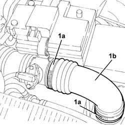
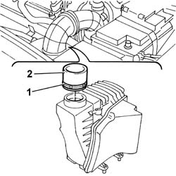

1048A40 sleeve from air cleaner to flow meter - r + r
- Path
- Procedures > 10 ENGINE > 1048 ENGINE AIR SUPPLY CIRCUIT > 1048A vacuum air circuit > 1048A40 sleeve from air cleaner to flow meter - r + r
- Kind
- repair procedure (removal / refitting; the operation number is the code)
- Applies to
- engines: 1.6 TS, 2.0 TS, 1.9 JTD 8V; all production periods
- Interactive page
- https://sloeber94.github.io/elrnDB-a147/en/#/3024827
Applies to: engines: 1.6 TS; all production periods
 Removing
Removing
 Refitting
Refitting1. Loosen collar (1a) and remove the sleeve from air cleaner to throttle body (1b).

Applies to: engines: 1.6 TS; all production periods
Refitting
RemovingRefit the hose from the air filter to the rigid pipe and secure it using the collars
Applies to: engines: 2.0 TS; all production periods
Removing
Refitting1. Loosen collar (1a) and remove the sleeve from air cleaner to flow meter (1b).
Applies to: engines: 2.0 TS; all production periods
Refitting
RemovingRefit the hose from the air cleaner to the flow meter and secure with collars.
Applies to: engines: 1.9 JTD 8V; all production periods
Removing
Refitting1. Open the band securing the sleeve to the air cleaner.
2. Remove the sleeve connecting the air cleaner and flow meter.

Applies to: engines: 1.9 JTD 8V; all production periods
Refitting
RemovingFit the sleeve connecting air cleaner and flow meter.
Do up the retaining band on the filter case.